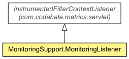

- java.lang.Object
-
- com.codahale.metrics.servlet.InstrumentedFilterContextListener
-
- com.fns.xlator.monitoring.MonitoringSupport.MonitoringListener
-
-
Constructor Summary
Constructors
| Constructor and Description |
MonitoringListener(com.codahale.metrics.MetricRegistry metricRegistry) |
-
Method Summary
-
Methods inherited from class com.codahale.metrics.servlet.InstrumentedFilterContextListener
contextDestroyed
-
Methods inherited from class java.lang.Object
clone, equals, finalize, getClass, hashCode, notify, notifyAll, toString, wait, wait, wait
Copyright © 2016 FNS. All rights reserved.